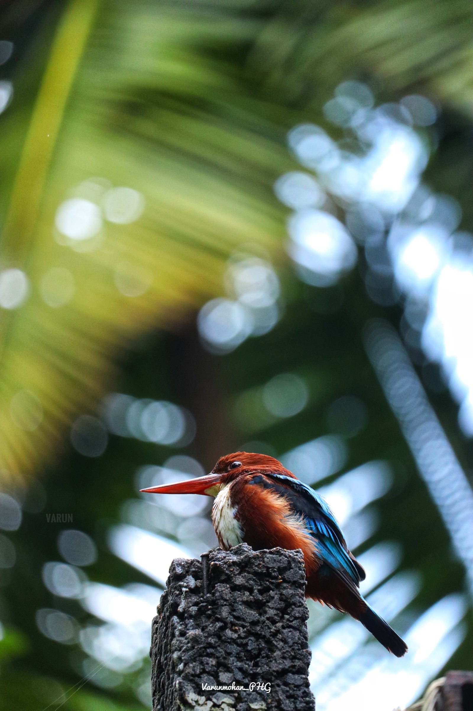
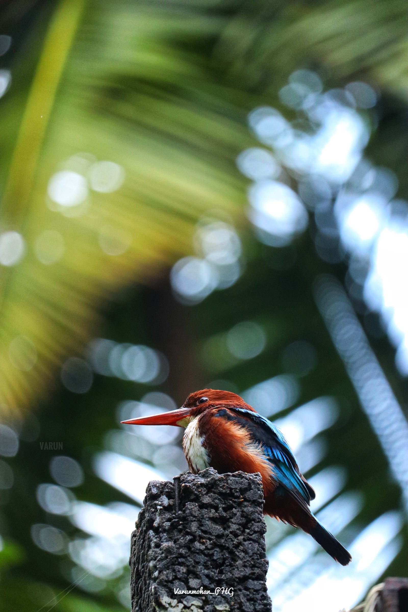

Wildlife photography is a genre of photography concerned with documenting various forms of wildlife in their natural habitat.
While wildlife photographs can be taken using basic equipment, successful photography of some types of wildlife requires specialist equipment, such as macro lenses for insects, long focal length lenses for birds and underwater cameras for marine life
As well as requiring photography skills, wildlife photographers may need field craft skills. For example, some animals and birds are difficult to approach and thus a knowledge of the animal's and birds behavior is needed in order to be able to predict its actions. Photographing some species may require stalking skills or the use of a hide/blind for concealment.
 


HISTORY
In the early days of photography, it was difficult to get a photograph of wildlife due to slow lenses and the low sensitivity of photographic media. Earlier photos of animals were often captive animals. These included photos of lion cubs taken at the Bristol zoo in 1854 and in 1864, photos of the last Quagga by Frank Hayes. Wildlife photography gained more traction when faster photography emulsions and quicker shutters came in the 1880s. Developments like these lead to photos such as the ones taken by German Ottomar Anschutz in 1884, the first shots of wild birds in action. Members of the Delaware Valley Ornithological Club (DVOC) captured early photographs of nesting songbirds in the Philadelphia area in 1897. In July 1906, National Geographic published its first wildlife photos. The photos were taken by George Shiras III, a U.S. Representative from Pennsylvania. Some of his photos were taken with the first wire-tripped camera traps.
BASIC CONSIDERATIONS

LIGHTING
As a nature photographer, I have learned that the ideal light for a photo varies depending on the subject. Landscape photos are usually best photographed in sunny weather, early in the morning or late in the afternoon when the contrast is low and the light is soft and colorful. On the other hand, rainforest photography is usually best in the middle of the day in cloudy weather to eliminate extremes of light and shade. To understand the best lighting for wildlife photography, take a lesson from both landscape and rainforest photography.
AVOID WILDLIFE PHOTOGRAPHY IN MIDDAY
Midday lighting is plenty bright, but it's hard, it's contrasty, and the intense downward angle creates unpleasant shadows. So if you want to capture the best wildlife photos, I recommend you avoid midday lighting whenever possible.
SHOOT DURING THE GOLDEN HOURS
The golden hours refer to the hour or two just after sunrise and the hour or two just before sunset. And they're absolutely amazing for wildlife photography. During the golden hours, the sun sits low in the sky, which means that it'll hit your subject with beautiful, even rays of light. And because the sun is so low in the sky, it turns a lovely golden color, which looks gorgeous in wildlife photos.